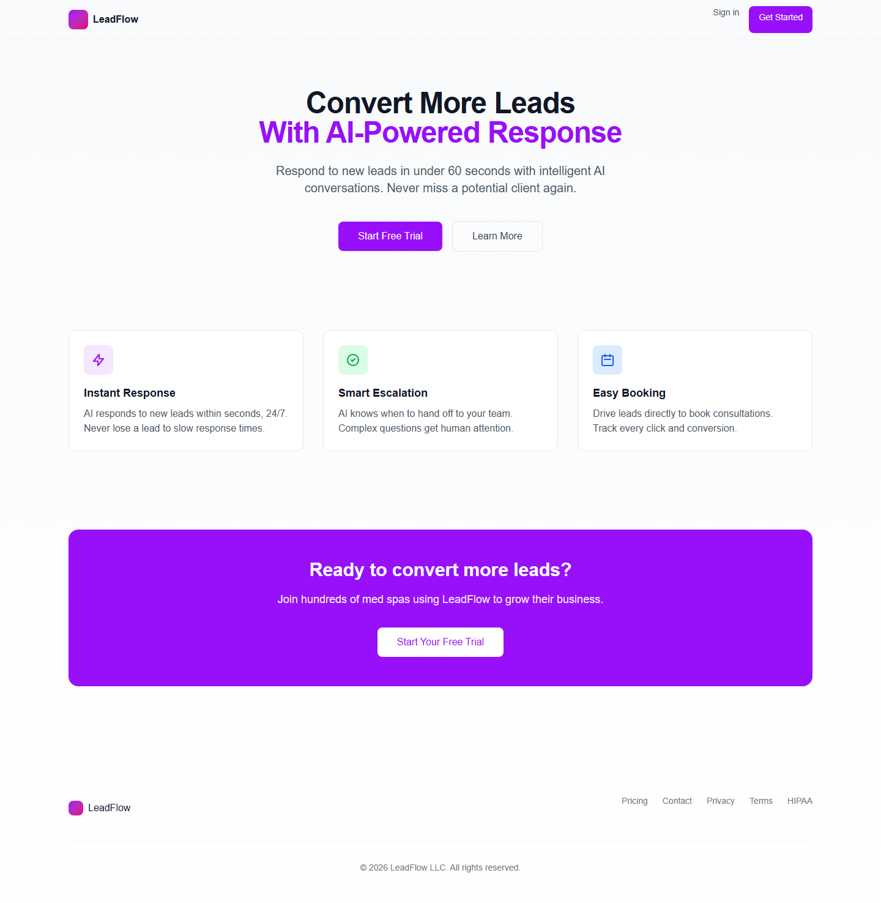
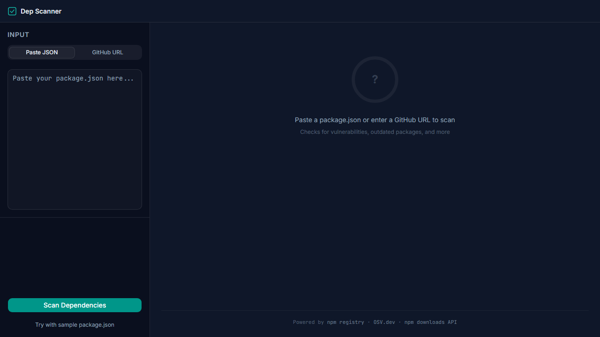
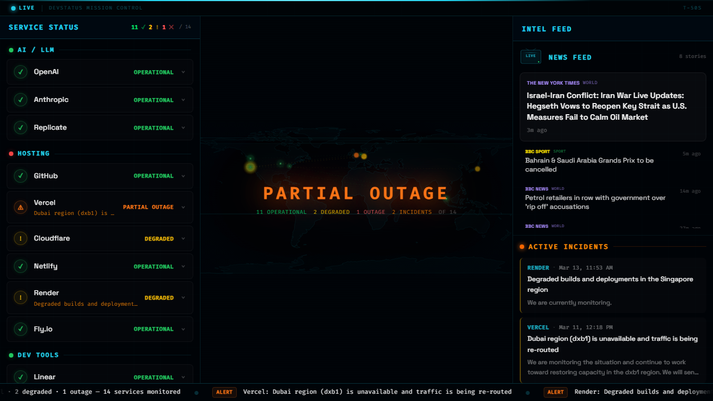

BCPOS
September 2025 to Present
Systems Architect and Engineering Lead
Promoted from mid-level to architect in three months. Sole engineer across architecture, frontend, backend, database, cloud, QA, and production support for 50+ active projects.
Systems Architect and Full-Stack Engineer
Production Systems for Payments, Logistics, Retail, and Healthcare
I design and ship production software end to end, from schema and infrastructure to frontend, automation, hardware integration, and deployment.
I built an AI-directed engineering workflow that lets one engineer move at the pace of a small team. Using structured project context and disciplined delivery phases, I shipped four production systems in six months as the sole engineer.
My work spans React, .NET, Azure, SQL Server, hardware-connected kiosks, offline-first flows, payment infrastructure, and HIPAA-adjacent logistics. I am based in Puerto Rico and available for remote U.S. roles.
Systems Architect and Engineering Lead
Promoted from mid-level to architect in three months. Sole engineer across architecture, frontend, backend, database, cloud, QA, and production support for 50+ active projects.
Frontend Engineer
Built Angular and TypeScript applications in agile client engagements, improved performance, and delivered responsive WCAG-conscious interfaces.
Software Developer
Built Angular features for public health platforms, implemented JWT and RBAC, and automated epidemiological reporting with SQL Server.

An AI-powered lead response platform for med spas. Engages new leads via SMS in under 60 seconds, handles intelligent conversations, books consultations, and escalates to humans when needed. HIPAA-aware message handling with automatic PHI detection and redaction.
Built a multi-tenant SaaS with Clerk auth, Stripe subscriptions, Twilio A2P 10DLC-compliant SMS, and Claude-powered conversational AI. Includes a real-time analytics dashboard, lead source tracking, smart escalation logic, and Google Calendar booking integration.
Live at lead-response-saas.vercel.app. Currently servicing med spas across the United States, Puerto Rico, and Latin America with paying subscribers on monthly plans.

A web app where users paste a URL and an AI agent autonomously tests the site for accessibility, SEO, performance, security headers, and broken links, streaming its reasoning in real time.
Built a multi-step agentic loop using Claude tool_use with 6 server-side analysis modules. Results stream to the browser via SSE, showing the agent's thinking, tool calls, and findings as they happen.
Live at ai-qa-agent.vercel.app. Produces structured reports with letter grades (A-F), categorized issues, and actionable recommendations across 6 QA dimensions.

A dependency health scanner where users paste a package.json or enter a GitHub URL and get instant health scores, vulnerability reports, and upgrade recommendations for every npm package.
Built a server-side analysis pipeline that concurrently queries the npm registry, OSV.dev, and npm downloads API, then computes composite health scores with a custom grading algorithm. Includes a treemap visualization and exportable reports.
Live at dep-scanner.vercel.app. Scans up to 80 packages per analysis with letter grades (A-F), categorized vulnerabilities, and auto-generated fix commands. Exports to JSON and CSV.

A real-time status monitoring dashboard tracking 15 developer services with a mission control aesthetic. Aggregates live status, active incidents, and tech news into a single NOC-style view.
Built with ISR-powered data fetching from Statuspage.io APIs, RSS feeds, and Hacker News. Features a 3-panel layout with an interactive SVG world map, incident timeline, scrolling ticker bar, and client-side polling.
Live at devstatus-lilac.vercel.app. Monitors OpenAI, Anthropic, GitHub, Vercel, Cloudflare, Netlify, and more with 60-second refresh cycles and zero API keys required.
Enterprise payment kiosk platform for bilingual self-service payment collection across 25+ retail locations.
Architected and shipped solo with clean architecture, kiosk hardware integration, auto-sync queues, and transaction safety protections.
Delivered a stable production rollout with resilient payment handling and operational reliability across a live retail footprint.
A medical transport logistics platform for distinct driver personas in a HIPAA-adjacent environment, requiring mobile-first trip execution, signatures, geofencing, and clear status updates.
Built React portals with Firebase messaging, WebSocket updates, mutation queuing, and a guarded backend state machine. Added mutex-based token refresh to eliminate race conditions.
Created a reliable logistics workflow that survives connectivity loss, keeps drivers synchronized in the field, and supports production-ready dispatch operations.
An operations portal for dispatch and transport coordination that needed real-time communication, reporting, and reliable production delivery in a compressed timeline.
Built as a React PWA with WebSocket messaging, PDF generation, and a steadily expanded automated test suite using Vitest and Playwright.
Went from first commit to production deployment in 3.5 weeks with 215 tests, PDF reporting, and stable real-time interactions.
A tablet-based point of sale for cash checkout, membership workflows, and receipt printing in a healthcare retail environment.
Delivered an Ionic and Capacitor application with native Android hardware support to bridge web UI speed with reliable physical device control.
Provided a dependable tablet POS flow with hardware-backed printing and drawer operations suited for day-to-day store use.
React 19, TypeScript, Angular, Vite, Tailwind CSS, TanStack Query, Zustand, Zod, i18next, responsive UI architecture.
.NET 10, C#, ASP.NET Core, Entity Framework Core, REST APIs, SQL Server, Azure SQL, and clean architecture.
Azure App Service, Azure SQL, Azure Static Web Apps, GitHub Actions, GitLab CI and CD, Azure DevOps, and Bicep.
Vitest, Playwright, Jest, Cypress, offline-first sync flows, idempotency controls, RBAC, JWT auth, and accessibility-conscious implementations.
WPF with WebView2, Ionic with Capacitor, kiosks, payment terminals, thermal printers, cash drawers, and field device integrations.
Claude Code, ChatGPT, Gemini, structured project memory, build sequencing, automated review loops, and context-driven implementation workflows.
I am open to senior engineering and systems architecture roles where end-to-end ownership, delivery speed, and production reliability matter.
Start a Conversation